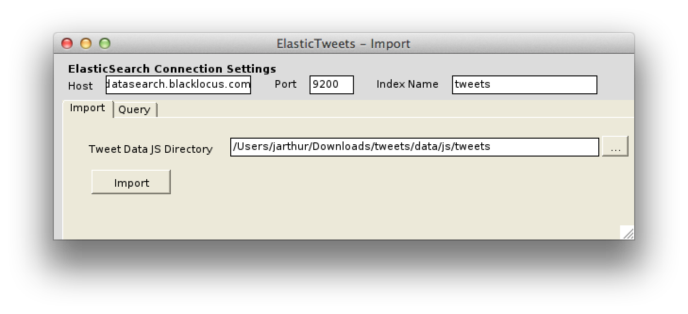

Elasticsearch for Everything
- Justin T. Arthur
- Senior Software Engineer
What Elasticsearch Is
- Decentralized Cluster of Data and Compute Power
- A RESTful Create, Read, Update, Delete Datasource
- Uses Replicas for High Availability of the Data
- A Java web application and service layer.
A webservice for storing data safely and retrieving data quickly.
A Very Active Project
What It's Made For
Search. Near-realtime querying of indexed data. Also, analysis.
But you can also use it as a RESTful database.
Take TodoMVC, a simple browser-side application implemented in any one of a variety of JS MVC frameworks
Lists of items are a perfect application for RESTful JSON storage. MongoDB and DynamoDB could work.
Great, but why do such a thing?
- Form field autocomplete widgets that are smarter, faster.
- Could enable faceted navigation of my site's data.
- Queries that can power amazing data visualizations quickly.
- Scaling & availabity.
Elasticsearch Your Life
I'm not a web developer, what can elasticsearch do to improve my life?
I downloaded my tweet archive from twitter.com and used Adrian Hills' ElasticTweets app to import them into elasticsearch.
Elasticsearch Your Life
{
"query" : {
"match_all": {}
},
"facets": {
"what_times_of_day_do_i_tweet": {
"terms" : {
"script_field" : "doc['created_at'].date.hourOfDay"
}
},
"who_do_i_talk_back_to": {
"terms": { "field": "in_reply_to_screen_name" }
}
}
}
I haven't been entirely forthcoming...
Elasticsearch doesn't have authentication or security.
Search queries don't give you real-time access to your data.
Relational data... meh
Links
- http://www.elasticsearch.org/
- Download and Documentation
- https://github.com/AdaTheDev/ElasticTweets
- ElasticTweets, upload tweets to elasticsearch. I got it to compile with Mono in OS X
- http://addyosmani.github.com/todomvc/
- TodoMVC
- http://mobz.github.com/elasticsearch-head/
- elasticsearch-head
- Data Visualization with ElasticSearch and Protovis
- On the elasticsearch blog.
My elasticsearch Todo List
- Open-source my elasticsearch ORM for Backbone Sync
- Open-source this slide deck
- Help out with elasticsearch documentation.
/
#